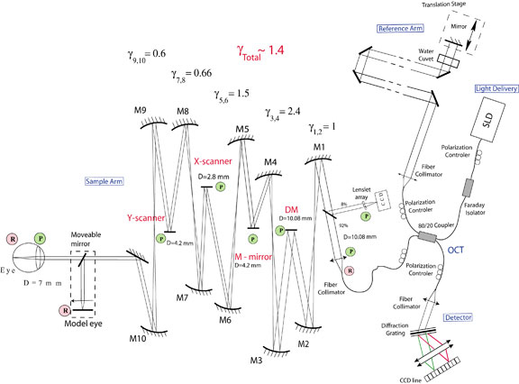
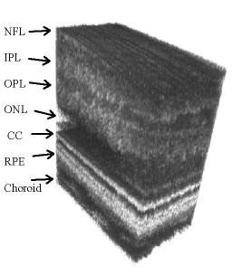

Adaptive Optics - Optical Coherence Tomography (AO-OCT)
Optical coherence tomography (OCT) has recently gained widespread popularity among ophthalmologists for use in the clinical diagnosis and monitoring of human retinal disease. The key to this success is the ability of OCT to make noninvasive, in vivo measurements of the thickness of specific retinal layers, such as the nerve fiber layer, which thins in patients with glaucoma. The resolution of OCT systems in the axial dimension is set by the coherence properties of the light source. Current light sources can provide axial resolution below 3 µm, which is more than sufficient to resolve the axial dimensions of most retinal cells. The lateral resolution is set by the diffraction limit of the eye’s pupil. For most subjects, the pupil may be dilated to at least 6 mm using standard pharmaceuticals, giving a diffraction-limited resolution of less than 3 µm. However, in practice the lateral resolution is substantially degraded from the diffraction limit by the optical aberrations present in the eye. Consequently, most ophthalmic OCT systems are designed to be operated with a lateral resolution in the range of 15-20 µm. This resolution is not sufficient to allow visualization of many clinically important retinal cells, such as the cone photoreceptors, which are damaged in many retinal diseases, such as diabetic retinopathy and age-related macular degeneration, two leading causes of blindness in developed countries.
Background
The solution for improving lateral resolution in ophthalmic OCT imaging is the use of adaptive optics to correct the aberrations in the eye. Adaptive optics (AO) work by measuring aberrations using a wavefront sensor (e.g., a Shack-Hartmann sensor) and applying this information to compensate the measured aberrations using a wavefront corrector (e.g., a deformable mirror). This approach to improving lateral resolution has previously been demonstrated in other retinal imaging modalities, first in digital fundus cameras and more recently in scanning laser ophthalmoscopes. For these instruments, the use of AO has been shown to produce retinal imagery at or near the diffraction limit, but still with limited axial resolution.
OCT at UC Davis
Capitalizing on the demonstrated success of AO to correct ocular aberrations, we and our collaborators at Indiana University and the Lawrence Livermore National Laboratory have recently combined AO with OCT, seeking to produce the first capability for noninvasive, in vivo, 3D visualization of the human retina at the cellular level. A schematic of the system developed in our laboratory is shown here.

The optical design of the sample arm consists of a series of afocal telescopes that conjugate the pupil plane of the eye with key components of the system. Key: γ - magnification, D - diameter, DM – deformable mirror; M1-M10 – spherical mirrors, P – pupil plane, R - retinal plane.
This instrument successfully combines the advantages of Fourier-domain OCT and advanced micro technology for adaptive optics, using a 35-element bimorph deformable mirror (DM) built by AOptix Technologies, Inc, which was originally developed for use in wireless laser communications. Use of this bimorph DM, which has a large range of surface deformation (up to ± 16 µm) enables correction of up to ± 3 Diopters of defocus, and enables the focal plane of the instrument, which has a depth of focus of ~60 µm, to be scanned axially through the retina in order to optimize the visualization of specific layers.
The AO Fourier-domain OCT instrument in the Vision Science and Advanced Retinal Imaging Laboratory has been used to produce volumetric retinal images with 200 B-scans/volume and 500 A-scans/B-scan. The A-scan exposure time was 50 μs, so the time needed to acquire the entire 3D image was ~5 s. The images were acquired over a 0.5 x 0.2 mm rectangular area of retina with 1 μm lateral sampling density in both lateral directions. The light source was a superluminescent diode with lO = 841 nm, Dl = 50 nm, providing 6-µm axial resolution. An example of the resulting 3D retinal image is shown below. The lateral structure seen in the CC layer is due to the individual cone photoreceptors that are resolved in this image with a measured spacing of 10 µm. Key: NFL – nerve fiber layer, IPL – inner plexiform layer, OPL – outer plexiform layer, ONL – outer nuclear layer, CC – connecting cilia, RPE – retinal pigment epithelium.

These movies show a series of B-scans (based on 500 A-lines over 400 µm regions of retina) at three different retinal locations. The movies were acquired at 36 frames/sec. Note the larger photoreceptors and inter-receptor gaps at 4 deg. retinal eccentricity. To evaluate the structures in different retinal layers, an average one-dimensional power spectrum was calculated for the 200 B-scans in the 3D volume images. A clear peak in the power spectrum was seen in the photoreceptor layer, at the connecting cilia, due to regular structures, such as those seen in the B-scan. The observed peaks in the spatial frequency correlate with cone-to-cone spacing observed in AO-flood illumination systems as well as that reported for cone photoreceptor mosaics studied by histology, conclusively demonstrating that the structures seen in the images in this layer are resolved photoreceptors.
Double-click to watch the movie
By combining new adaptive optics technology with the latest techniques in optical coherence tomography, medical researchers are building powerful new ophthalmic imaging instruments, capable of providing non-invasive, in vivo, 3D visualization of the human retina at the cellular level. Tests of the AO-OCT instrument in our laboratory have demonstrated excellent correction of low-order ocular aberrations using a bimorph DM, resulting in improved image quality, sufficient to enable identification of individual retinal cells. We have also incorporated a second (MEMs) deformable mirror to better correct the higher-order aberrations. While many improvements are being tested, results from our AO-OCT system are already demonstrating the promise of this ophthalmic imaging modality for providing a new, clinically important view into the human eye.